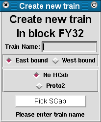
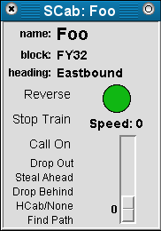

|
|

Woo, pretty colors
The SCab Picker program is designed to be easy to use. When the program starts it opens a window and attempts to connect to the server. If it is able to connect, the server sends back a large number of messages that define track elemensts (blocks, switches and how they connect), list the trains currently defined in the system. (If the SCab Picker program is unable to connect to the server, it loads this information from a locally stored file.) The server then sends more messages that provide status information for each object in the layout, such as block ownership and occupancy, switch positions, train speed and direction. The display program processes these messages, loads some display information from a local file and builds a pair of displays that show the status of the layout.
The display program is now ready to use. The lower pane in the display shows a large image of a portion of the layout. The layout display is configured so that the tracks are generally laid out horizontally and the overall layout is much wider than it is tall. Each block has a label, which will usually be near the middle of the block. Block labels consist of a white text on a black background. Switch labels are typically placed at the branch point, and consist of black text within a white ellipse or circle. Both types of labels are automatically sized to match the size of the text they contain (which doesn't always work as well as it should due to limitations of Python/Tkinter). This screen shot, and all the others on the page, were taken running the program under Linux. There are minor differences between the appearance under Windows and under Linux.
The upper pane of the display shows a small version of the entire layout. This is scaled automatically to fit the available width, and updates automatically as the window is resized. The display in the upper window should always match the lower window, except for the lack of block and switch labels The upper display contains a pair of vertical orange bars that indicate the portion of the layout visible in the lower window. The layout in the lower view can be scrolled either withe the scroll bar at the bottom of the window or by clicking and dragging withthe left mouse button in the upper pane.
Depending on the startup configuration, the window may also include a Foo button at the bottom of the window. Pressing the escape key on the keyboard will also call the Foo function.
There may also be a menu bar at the top of the window containing commands to list all blocks, switches, and cabs, edit and save the display layout and some other functions. The only commands likely to be of general interest are the commands to exit the program (you can also edit by clocking the close window button in the title bar) and the command to connect and disconnect from the server. Even these will be of little interest.
The ends of blocks and switches are marked by red, yellow or green signal bars. These signals generally come in pairs at the junction of track elements (blocks and switches). The signal that applies to a train in a given block or switch is the first signal in the pair that it will pass as it passes that point. At the moment, a green signal means that the train has at least two clear blocks after the current block, a yellow signal means only the next block is clear, and a red signal means the train may not move into the next block (the next block may be occupied, or in the case of a siding, may not exist.) The server stops trains that receive red signals, until either the signal changes or the operator sends a 'call on' signal acknowledging the signal.
The server is actually able to send one of nine signals (approach, restrict, clear, medium clear, etc.) corresponding to actual signals used by railroads. The display software may be modified in the future to show signals using diagrams of prototypical railroad signals. The server may also be modified so that it can generate more prototypical signals (for instance, to restrict train speeds in congested areas or around sharp turns.)
Blocks are drawn with one or more connected line segments. The color of a block indicates its status:
| Color | Block status |
|---|---|
| White | Unoccupied and unowned |
| Dark green | Occupied by an unassigned rail car |
| Light green | Occupied by an unassigned locomotive |
| Red | Occupied and owned by an assigned train |
| Pink | Owned but not occupied by a train (advance block) |
| Blue | Block is out of service |
Note that the coloration is not always correct. The method used to distinguish between locomotives and other occupying rail cars is not always correct. Occupancy is detected by running a fixed current between the rails and measuring the resulting voltage. An unoccupied block (or one occupied solely by cars with insulated wheel sets) will be an open circuit, and will have the same voltage as the current source. A typical occupying wheel set on a caboose or other car will have a resistance of about 40 kohm, and a locomotive will have a much lower resistance. The server attempts to distinguish between locomotives cars based on the different voltages produced, but it is not always accurate, sometimes (even frequently) mistaking cars for locomotives and vice versa. As a result, the display program treats blocks the same whether the server reports them as occupied by a locomotive or a car. Coloration can also be incorrect with long trains that span more than two blocks. In the server a train owns a block until the end of the train has passed out of it, leaving the block unoccupied. If the train is long enough, and there are non-occupying cars in the middle, a block in the middle of the train may be unoccupied even though there are owned and occupied blocks on both ends of it. Such a block will be displayed in pink, the same as an advance block. This condition also occurs if occupying cars at the end of a train uncouple. When this happens the train can appear to get very long and end up owning most of the layout.
There are two functions associated with blocks on the layout diagram. Clicking the left mouse button on an occupied but unowned block (displayed in dark or light green) will open a train creation window. This dialog box can be used to specify the name of the train, the desired starting direction and whether or not the control of the train should be assigned to a hardware cab (HCab). Once these selections are made the user clicks the button labeled 'Pick SCab', sending the server a request to create the train as specified. Before sending the message, the display program checks to ensure the train name is valid. First the names are stripped of leading and trailing white space. The resulting string must have at least one character. Train names cannot match the name of any existing train (the server would replace the old train with the new one) or the name of a block or switch (the server uses a common name space for trains, blocks and switches.) Train names cannot contain a double quote character (") as this would cause the s-expression parser no end of trouble later on. Aside from that, if you can type it on the keyboard, it should be accepted by the program. Clicking on a second occupied block which the train creation window is open will cause the existing window to be modified to create a train in the newly selected block. Only one train creation window will ever be open at a time.
Clicking the right mouse button on a block will tell the server to mark the block as being out of service. A block that is out of service is non-existant from an operational perspective. No trains may be created in or run through it. For systems with a single mouse button, holding down the Alt key while clicking on a block will perform this task (or holding down Alt while clicking with the left mouse button on systems with more than one button.)
Turnout switches each have three connections, numbered 0, 1, and 2. Connection 0 is the base of turnout, connection 1 is the normal route through the switch and connection 2 is the route that will be followed when the switch is reversed. A crossover switch adds a fourth connection, number 3, connected to number 2 when the switch is in the normal position. Turnouts are drawn with three or four line segments, crossovers with five. Switch labels are always positioned at the junction between the 0, 1 and 2 connections, with the switch label being on the same side as the 1 connection. This means that if a switch is laid out with the 1 connection above the 2 connection, the label will be above the switch. The thickness of the lines used to draw each segment indicates the position of the switch, with thick lines used to show the active route and thin the inactive route.
Switches do not have their own occupancy status. They instead take their occupancy from the block or switch elements to which they are connected. In the simplest case, the 0 connection of a switch is connected to a block. In this situation, the coloration of the active route through the switch will be the same as the coloration of the block attached to connection 0. The inactive route will be shown in a medium grey color. The next simplest situation has the 0 connection of a switch (referred to as S1 in this example) connected to the 1 or 2 connection of a switch, S2, whose 0 connection connects to a block. In this case, the active route of S1 will be displayed in the same color as the portion of S2 to which it is connected. This could result in the active route of S1 being show in the grey color, indicating that it is inaccessible. More complicated situations result when the 0 connections of two switches, S1 and S2 are connected together. In this case, one or both of the switches must be configured to take its status from the object on the 1 and 2 connections depending on the switch position. These situations will generally be eliminated as more block cards become available.
There is only one function associated with switches: a left mouse click on any of the elements of a switch (the tracks, signal bars, and label) will cause the display program to send the server a message to throw the switch.
The display program can be run on several computers at once, each of which will have its own connection to the server. Messages from the server with regard to blocks and switches will be treated the same by all the separate instances of the display program. Some messages from the server regarding trains are treated differently depending on whether or not the server action was in response to a command from the particular instance of the display program.
When a train is created in response to a command sent by the display program, a SCab window will open containing controls to operate the train. At the top of this window is the name of the train. Below the train name is name of the block the head of the train is in and the direction of travel. Below the block and direction information are two columns of controls. On the left are buttons for reverse (click this button to reverse the train and travel in the indicated direction), all stop (sets the trains speed to zero), call on (allows the train to advance against a red signal), drop out (tells the server to delete the train), steal ahead, drop the last block, hardware cab assignment (opens a window listing available hardware cabs) and pathfinding. On the right is the signal indication for the train, the speed the server has set for the train and a slider to control the speed. The slider and speed indications may differ if the server has stopped the train for some reason (a red signal for instance).
All trains in the system are also listed in the train summary window. The train summary window provides a limited set of controls for each train in a smaller format. At the left of each row is the signal indication for each train, followed by a button listing the name of the train and the HCab it is assigned to if any. Clicking on the name will open a SCab window for the train. To the right of the name are block, speed and direction labels. Next are buttons to reverse, stop and drop the train from the system.
|
Tech Model Railroad Club of
MIT Room N52-118 265 Massachusetts Avenue Cambridge, MA 02139
|
+1 617 253-3269 Email: tmrc-web@mit.edu |